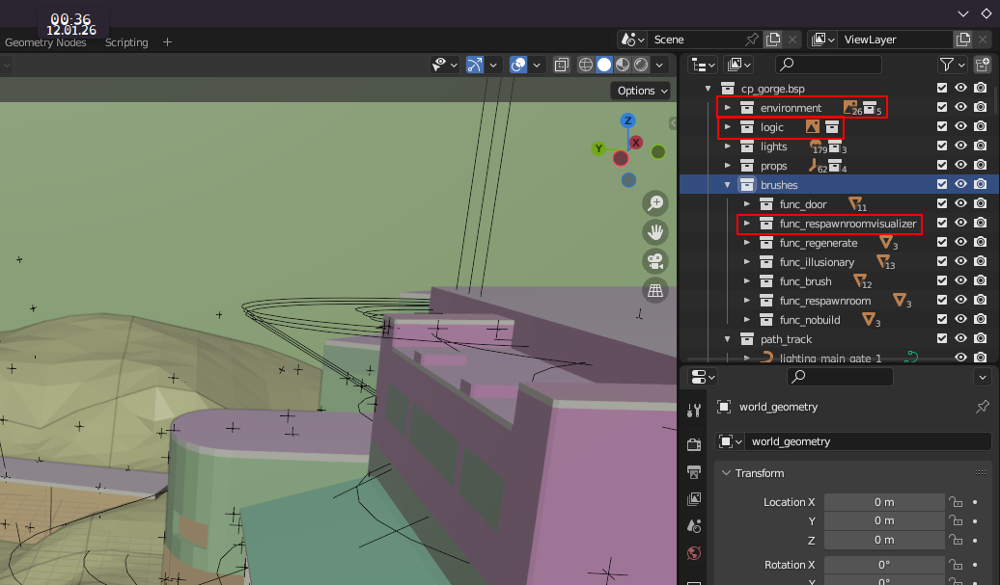
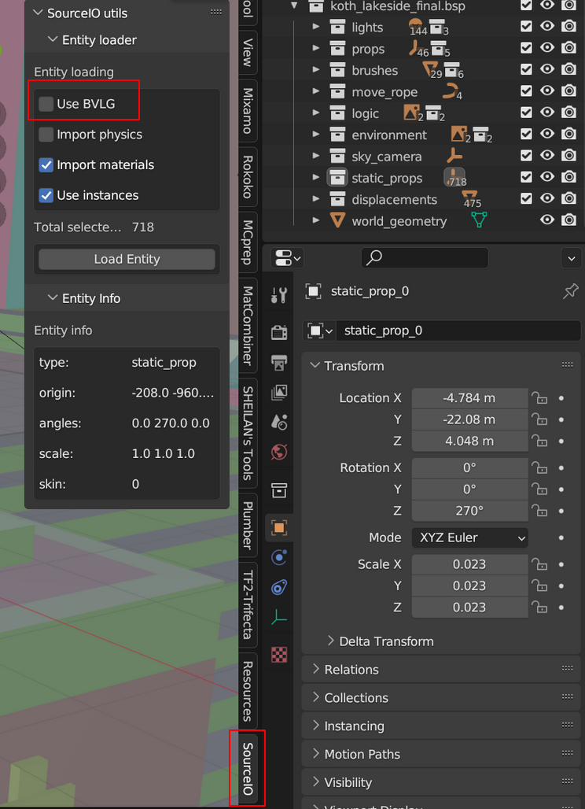
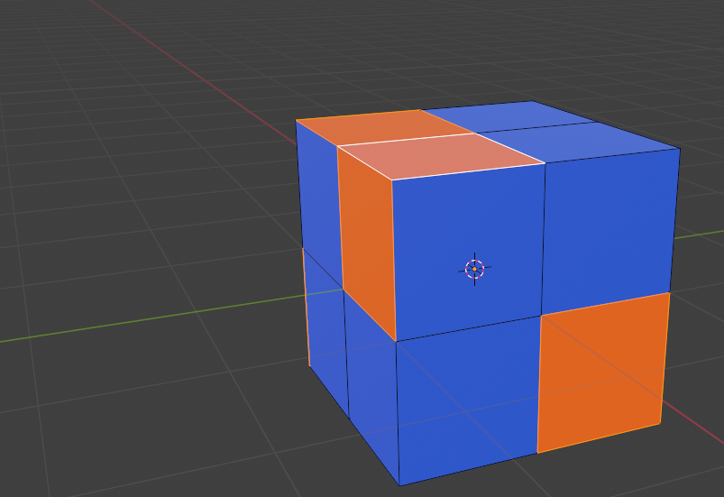
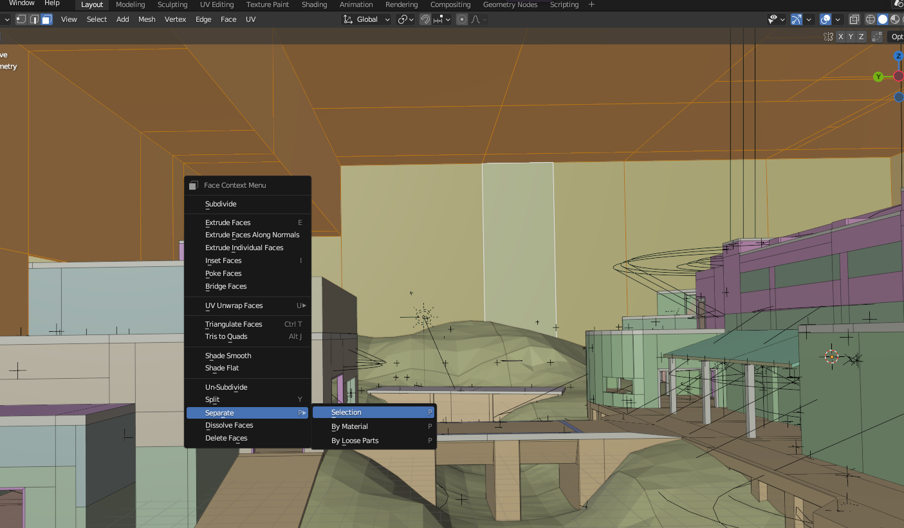
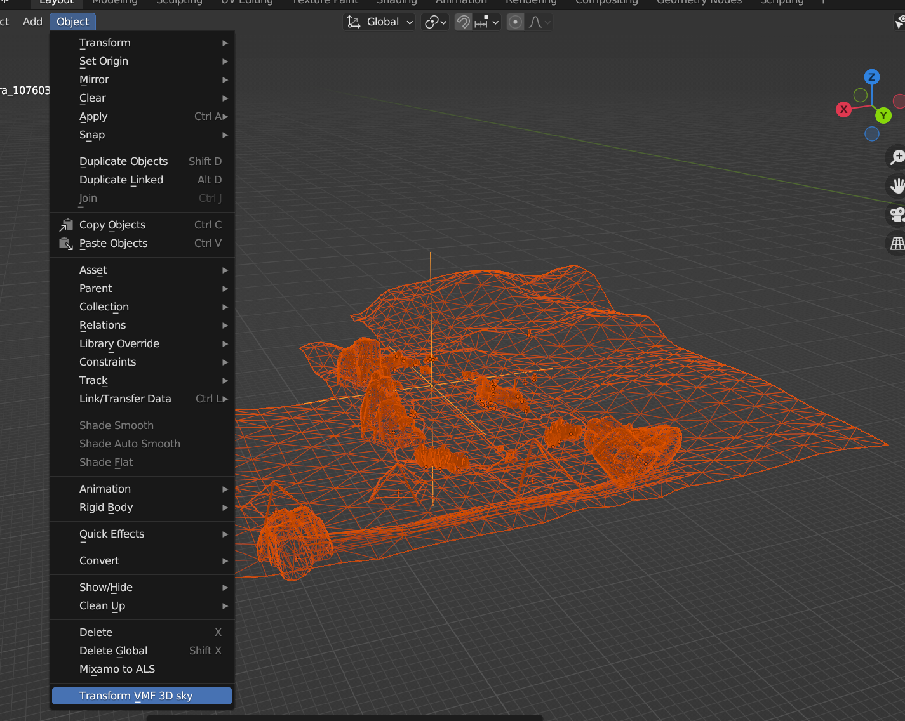
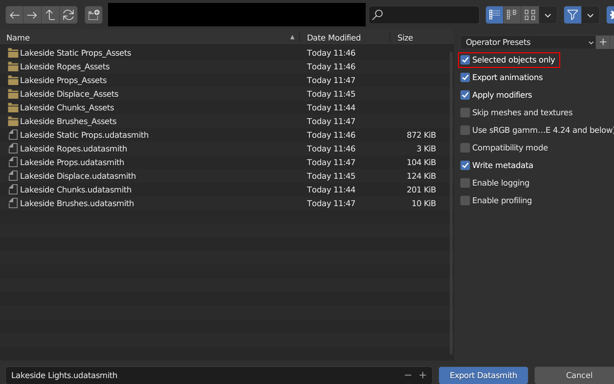
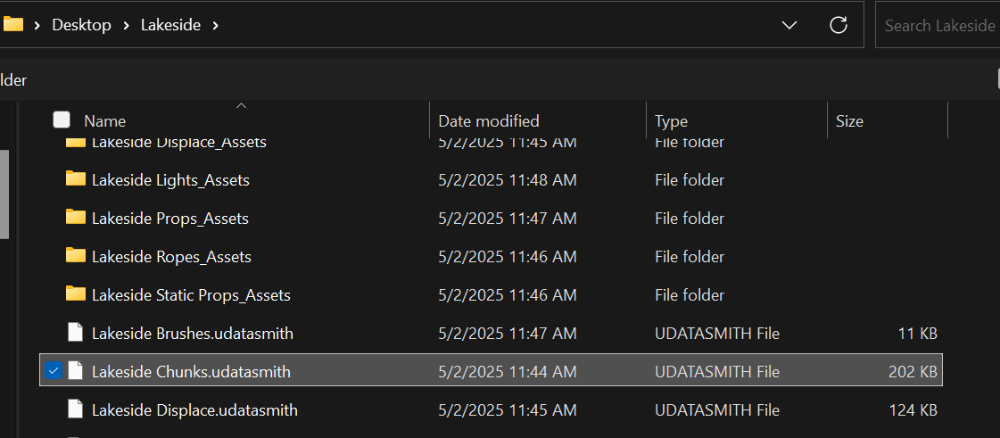

Porting a map:
this guide might not be intuitive in some parts yet!
ask for help on discord, you can ping me(bucket of chicken) or iconicplushstars1. Prerequisites
Install team fortress 2 on steam if you don't already have it(its free!)
Install blender 3.6
Install the source.io blender plugin (if you are a TFVR dev, use mano’s custom source.io if you would want TFVR map materials)
Install plumber blender plugin
Install the contractors Modkit (Basic unreal 4 knowledge is also needed)
Install the datasmith export plugin for blender
Enable datasmith import in unreal
1.5 getting a map bsp
go to the folder where you installed tf2, and browse to tf/maps, here you will find every map in tf2!
Part one: Blender
First you want to open blender
now, go to file>import>source engine assets>source map .bsp

Now set the world scale to 0.023 and set light power scale to 0.0225 and check rope entities on

Now find your map's bsp

Once its done importing delete the collections logic and environment and then go to the "brushes" collection on the right and delete all the objects in respawn visualizer
Now set the sky camera scale to 16

Select all the objects in static props and hit load entities, make sure to disable bvlg
you should now have all models
we dont have source-style skybox rendering so we need to remove the skybox
first thing to do is just click on these walls,

go into edit mode,
and click on them again, so we select a single face, then you press shift + g and select material
as the walls have a special material, only they will be selected

now you can just press right click and go to seperate->selection
Now you can delete them

we're not using seperate by material because it will seperate all materials
Now you need to select all displacement meshes(they are in a collection) and right click and go on shade smooth

now you need to split your meshes, to do this you need to execute the split mesh into chunks script
download split chunks script
Select your world geometry and execute the script
Next you need to select all of your newly created chunks and go to object->set origin->origin to geometry
unselect your chunks and now, manually merge your displacements into bigger chunks
Select the skybox and go into wireframe rendering. now, while holding shift, you need to select the skybox camera object and then go to object->transform VMF 3D sky
Run the fixmodelnames script (and if you have mano's custom source io, also run his clearmaterials.py)
once that is done select all objects in ONE collection and export them as udatasmith with selected objects only enabled, repeat this for all collections
Congrats, you are done with blender(in this guide)! only 1% survive this far!(i think)
Part two: She unreal on my engine
If you havent already, make a new map mod in unreal engine
then open your map and click the datasmith icon

now one by one import each udatasmith file
select your mod and import

Now fix any black materials if you didnt use mano's SourceIO
Now you have your map imported in unreal, there are however several things you can & need to do.
find more guides on the homepage
Or take a look at the old mapping guide